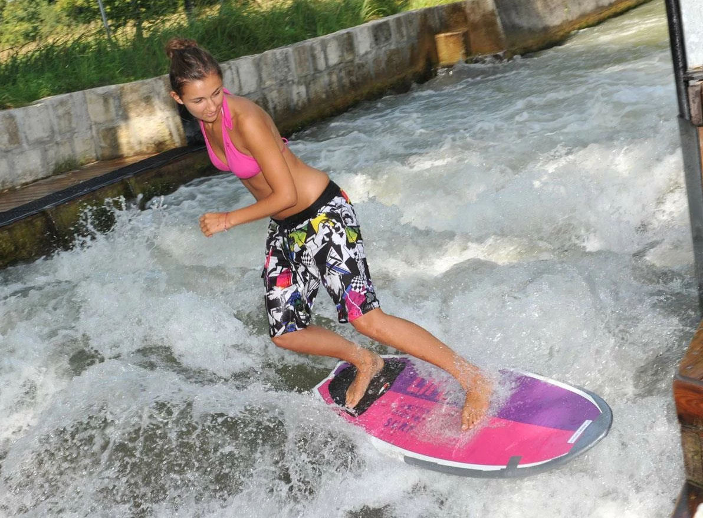
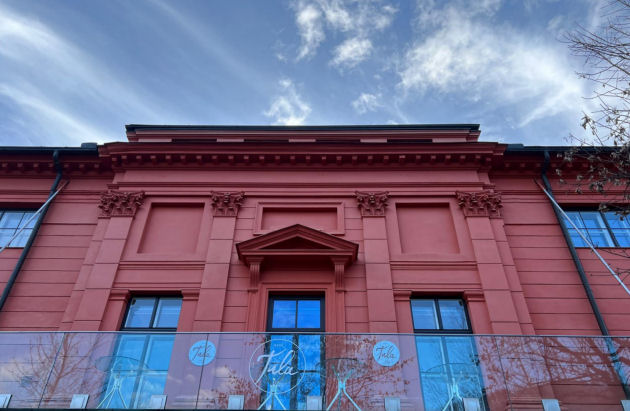

Salzburg buiten de gebaande paden. Insider tips en bijzondere plekken.
Salzburg behoort tot een van mijn favoriete Oostenrijkse steden. Het is met ca 156.000 inwoners een compacte stad. Salzburg is ook een van de oudste steden van Oostenrijk en werd gesticht in 755. Salzburg is de vierde stad van Oostenrijk maar dat is niet zo moeilijk als je je bedenkt dat er in Wenen ongeveer 2 miljoen mensen wonen en in de tweede stad van Oostenrijk (Graz) ongeveer 400.000.
Dan ben je met 156.000 inwoners al gauw vierde 😉
Salzburg is natuurlijk bekend als 'Mozart Stad' en beroemd om zijn historische Altstadt. Salzburg is relatief ongeschonden uit de twee wereldoorlog gekomen om dat het net uit de 'reach' van de geallieerde bommenwerpers lag. En dat is maar goed ook want Salzburg is een prachtige oude stad met als letterlijk hoogtepunt de beroemde Festung Hohensalzburg.
Veel, heel veel toeristen in Salzburg!
Als Mozart in je stad geboren is en het mooiste muziekfestival ter wereld, de Salzburger Festspiele, elk jaar plaats hebben in je stad dan is het logisch dat veel toeristen Salzburg weten te vinden. Elk jaar bezoeken maar liefst 3 miljoen toeristen deze hoofdstad van de gelijknamige deelstaat.
Daarom wil je ik nu eens meenemen naar de minder- en niet toeristische plekjes van Salzburg. Even buiten de gebaande paden en dan zul je ontdekken dat Salzburg nog leuker wordt.
Even geen Wienerschnitzels, Sachertorte of Mozartkugeln.
Ik wil je, zoals gezegd, tips geven buiten de gebaande paden. Dus even geen Schloss Mirabell, Schloss Hellbrunn of Getreidegasse en ook geen Wienerschnitzels, Sachertorte of Mozartkugeln.
Het is natuurlijk wel mijn persoonlijke interesse en verwacht geen Lonely Planet (by the way, Lonely Planet heeft geen gids over Salzburg).
Van 17e -eeuws brood tot aan golfsurfen. Salzburg heeft het!
Kaffee Alchemie
Begin de dag relaxed in Kaffee Alchemie aan de Salzach naast de universiteit. Kaffee Alchemie werkt alleen met koffie van kleine koffieboeren. Ook de taartjes zijn wereld beroemd in heel Salzburg. Een pluspunt is dat laptops verboden zijn hier. Dus geen remote werkers met koptelefoon op 😉
Kaffee Alchemie: Rudolfskai 38
Stiftsbäckerei St. Peter
Brood haal je in Salzburg bij de abdijbakkerij van de Sint-Pieters abdij. Deze bakkerij, met watermolen (!) bestaat al ruim 700 jaar. En er wordt brood gebakken volgens een eeuwenoud recept. Waarschijnlijk is het de enige bakkerij in Oostenrijk die alles van de boer tot het brood in één hand heeft. Het belangrijkste brood is het zogenaamde 'Schwarzbrot' gemaakt van natuurlijk zuurdesem. Je moet ervan houden maar ik vind het superlekker.
Stiftsbäckerei St. Peter Kapitelplatz 8
Fotohof
Tijd voor een beetje cultuur maar dan van hoge kwaliteit. Het Fotohof in Salzburg is in Nederland minder bekend en dat is onterecht. Fotografen van wereldformaat exposeren hier. Absoluut de moeite waard voor wie van hedendaagse beeldende kunstfotografie houdt.
Fotohof Inge-Morath-Platz 1-3
Damn PlasticDamn Plastic Victoria und Steph
Even shoppen maar dan anders. Maar wel net zo leuk. Damn Plastic is opgericht voor Victoria en Steph met als doel plastic waste te verminderen. Hun Slogan: Schon mal passiv nachhaltig gewesen? (Ben jij ooit passief duurzaam geweest?). En dat maakt hun winkel zo leuk. Toffe producten en tegelijk minder plastic in de natuur!
Damn Plastic Europastrasse 1
ARGEkultur en BEISL
Ik heb een zwak voor vrijplaatsen. Of het nou Bordeaux of Berlijn is, hier bruist het van de cultuur en creativiteit. Bij ARGEkultur is dat niet anders. Het is net zo goed een plek voor experimentele kunstprojecten als voor alledaagse popcultuur. Jaarlijks vinden er maar liefst 350 evenementen plaats en het is jammer dat het buiten Oostenrijk niet bekender is.
BEISL is het aan ARGEKultur gelieerde restaurant en met zijn grote zonneterras en internationale keuken is de BEISL dé centrale culinaire, kosmopolitische en communicatieve hotspot van Salzburg.
BEISL zelf omschrijft het zo: 'Ob Kulturinteressierte, Studierende, Besucher der ARGE Kultur, Sonnenanbeter, Künstler, Happy People, Liebhaber guter Gespräche oder einfach nur Salzburger mit Sinn für Anderes: Hier blicken Einheimische genüsslich auf den Teller und über den Tellerrand hinaus.' En zo is het. Lekker jezelf zijn in het mooie Salzburg!
ARGEkultur en BEISL Ulrike-Gschwandtner-Straße 5
Hangar-7/ Restaurant Ikaris
Hangar-7 is niet een onbekende bij veel toeristen. Er is een keur aan vliegtuigen en RedBull formule 1 auto's te zien. Daar moet je van houden maar de magie zit 'm meer in het bijzondere gebouw, de bar net onder de koepel en natuurlijk het restaurant Ikaris.
In het restaurant kookt elke maand een andere beroemde chef-kok uit de wereld. Pas op het is niet goedkoop maar zeker de moeite waard. Menu's beginnen bij € 215. Ook Vega!
Hangar-7/ Restaurant Ikaris Wilhelm-Spazier-Straße 7A
Almkanaal Welle

Golf surfen in Salzburg, het kan! Midden in stad Salzburg, in de wijk Gneis, ligt een kunstmatig gecreëerde golf in het historische Almkanaal. Het is natuurlijk geen Hawaii maar wat het golfsurfen hier zo leuk maakt is de community die hier is ontstaan. Je kan ook les krijgen en er is een hele chille vibe.
Dagelijks van 6:00u tot 22:u
GPS-coördinaten: 47.76197058; 13.03812146
Mozarteum University
Salzburg en klassieke muziek zijn natuurlijk synoniem. Om te kunnen genieten van betaalbare en ook vaak gratis voorstellingen kan je terecht bij Universität Mozarteum. Ook zijn er vaak repetities gratis te bezoeken. Lekker informeel, klassiek in je korte broek…
Mirabellplatz 1
Dansen in Salzburg: Electric Love Festival & City Beats
Dansen in Salzburg kan elk jaar tijdens het Electric Love Festival in juli. Het festival is inmiddels uitgegroeid tot het belangrijkste dansfestival in Oostenrijk met 180.000 bezoekers.
Dansen in Salzburg kan je in City Beats. Een club met drie zalen: Main Floor, Hip Hop Floor en de Party Floor. Pas op want in die laatste worden ook schlagers gedraaid. Je moet er van houden maar het is wel lekker Oostenrijks…
Electric Love Festival Salzburgring 1
City Beats Griesgasse 23
Tula im Künstlerhaus

Tula is the place to be voor een lazy sunday afternoon. Tula komt uit het Sanskriet en betekent balans. Dit is terug te vinden in het restaurant met het stromende water van de Salzach op de achtergrond. In zeer relaxte sfeer kan je genieten van de beste vega en vegan gerechten. Tula wordt met liefde gerund door Julia en Sandro. Nog een tip: neem eens een kijkje in het naastgelegen Künstlerhaus.
Tula Hellbrunner Straße 3
Misschien is deze blog niet compleet en heb jij nog tips. Ik houd mij aanbevolen voor meer 'Geheimtipps' maar dan graag wel leuke, bijzondere en niet de geijkte Salzburg toeristische attracties.
Leuke tips plaats ik hier dan onder met een update!